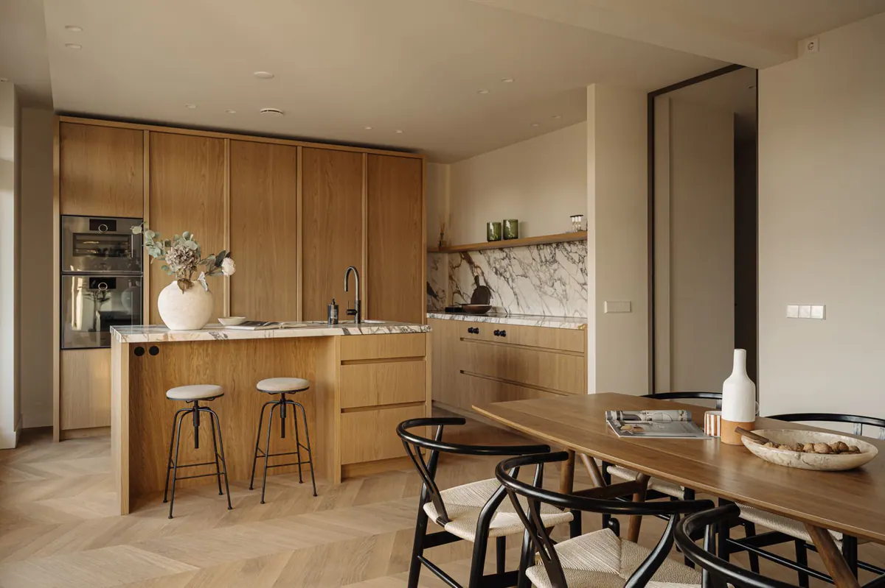

NEN 2580 inmeten: meetrapport en plattegronden in Haarlem en omstreken.
Ik meet de woning in volgens NEN 2580 en lever een meetrapport met 2D- en 3D-plattegronden. Dat gebeurt in dezelfde afspraak als de foto’s, en binnen 3 werkdagen heb je alles.

Wat je krijgt
- Een meetrapport met de gebruiksoppervlakte van de woning.
- 2D-plattegronden van de woning.
- 3D-plattegronden die de indeling in één oogopslag laten zien.
- Alles binnen 3 werkdagen, samen met de foto’s.
Zo werkt het
- 01
Boek de opname via het formulier. Ik plan de afspraak direct met de verkoper.
- 02
In één afspraak maak ik alles wat je kiest: foto’s, video, dronebeelden, 360°-tour en meetrapport.
- 03
Ik bewerk al het materiaal zelf, zodat alles dezelfde stijl heeft.
- 04
Binnen 3 werkdagen staat alles klaar.
Goed om te weten
Wat is NEN 2580?
NEN 2580 is de Nederlandse norm voor het meten van oppervlakten en inhouden van gebouwen. Hij legt vast wat wel en niet meetelt als gebruiksoppervlakte.
Wat is het verschil met de meetinstructie van makelaars?
Makelaars werken vaak met een branchebrede meetinstructie. Die is gebaseerd op NEN 2580, maar wijkt op enkele punten af.
Waarom een woning laten inmeten?
Met een meetrapport vermeld je de gebruiksoppervlakte eenduidig, bijvoorbeeld op Funda. Zo weten kopers precies hoeveel vierkante meter ze krijgen.
Waarom is de meetinstructie belangrijk voor makelaars?
NVM-makelaars vermelden de gebruiksoppervlakte volgens de meetinstructie. In 2018 oordeelde de Hoge Raad dat kopers daarop mogen vertrouwen; een makelaar die anders meet, kan aansprakelijk zijn voor de schade.
Andere diensten
- Vastgoedfotografie
Interieur, exterieur en details, klaar voor Funda.
- Vastgoedvideo
Een rustige rondgang door de woning, liggend en staand.
- Dronefotografie
Foto’s en video vanuit de lucht: tuin, ligging en omgeving.
- 360°-tour
Kopers lopen zelf door de woning.
Contact
Opname boeken?
Vul het formulier in, dan plan ik de afspraak direct met de verkoper. Bellen of mailen kan ook als je nog aan het oriënteren bent.
Boek een opname